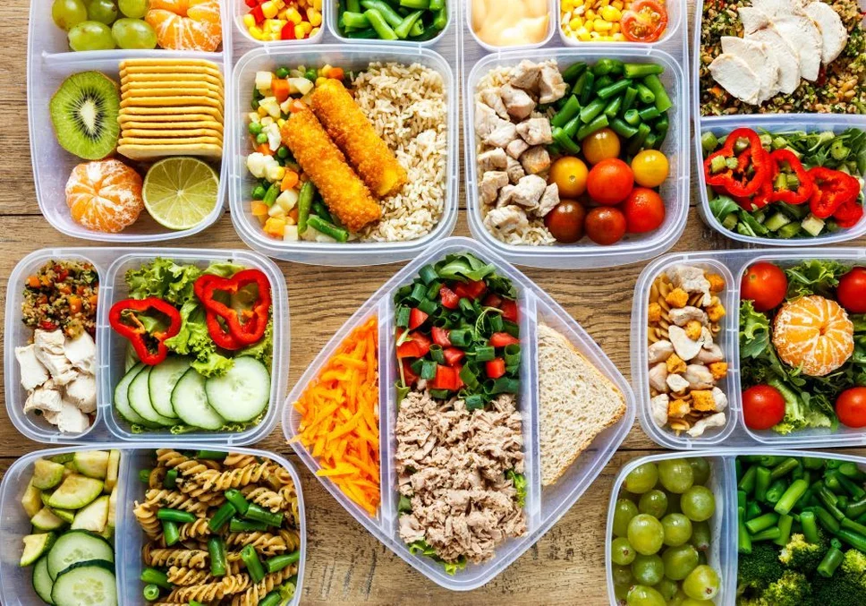

Правильне і збалансоване харчування — це запорука гарного самопочуття, побудови красивої фігури і чудового настрою. Воно підійде для тих, хто хоче контролювати вагу або м'яко знижувати її без шкоди для енергії. Ідеальне і збалансоване меню на 1500 калорій в день стане прекрасним помічником у формуванні фігури своєї мрії. Це раціональне рішення для щоденного раціону, що поєднує помірну калорійність з повноцінністю.
Ми зібрали просте, але зрозуміле і цікаве меню на 1500 ккал на день з простих продуктів, рецепти, таблицю, а також поради щодо організації раціону. Всі продукти максимально доступні, легко купуються і бюджетні. Рекомендації підійдуть як для початківців, так і для тих, хто має багаторічний стаж впровадження правильного харчування в своє повсякденне життя.
Навіщо вибирати меню на 1500 ккал на день?
Не секрет, що більшість дієт забезпечують користувачам швидкий ефект. Однак не вказується, що за рахунок постійних обмежень це може призвести до розладу харчової поведінки, формування хронічного стресу, зривів, а в результаті – до переїдання. Збалансоване харчування на 1500 калорій на день, побудоване на правильних характеристиках під конкретного користувача, легко дасть стійкий результат без жертв і урізання себе в смаколиках. Його легко підтримувати на практиці і комбінувати під різні ситуації. Таке меню з легкістю підійде:
- 1. Жінкам з малорухливим або помірно активним способом життя.
- 2. Чоловікам, які бажають м'яко знизити вагу.
- 3. Підліткам, які під керівництвом дієтолога і нутриціолога намагаються розібратися в харчуванні, збалансувати його.
- 4. Тим, хто хоче перейти на усвідомлене харчування.
Тому, якщо ви перебуваєте в пошуках простого, але ефективного методу безболісного контролю за вагою, меню на 1500 калорій з рецептами стане прекрасною комфортною альтернативою без зривів, переїдання і РПП в результаті.
Принципи складання раціону на 1500 ккал
Перш ніж починати планувати план харчування і впроваджувати його в повсякденне життя, рекомендується розібратися з основами. Отже, щоб раціон на 1500 ккал з простих продуктів приносив користь, експерти рекомендують дотримуватися простих, але зрозумілих правил. Ми зібрали їх в окремий список, постаравшись коротко викласти суть кожного моменту. Основні рекомендації, яких варто дотримуватися:
- утримуйте баланс БЖУ в наступних параметрах: білки — 25–30%, жири — 25–30%, вуглеводи — 40–50%;
- мінімізуйте використання цукру: виключіть солодкі напої, фастфуд, випічку;
- додайте максимально корисні продукти: цільнозернові, свіжі овочі, білкові;
- використовуйте дробове харчування: 3 основних прийоми їжі + 1-2 перекуси;
- введіть в харчування звичні і прості продукти без надмірностей.
Запам'ятайте одне золоте правило: харчування на 1500 калорій на день — це не про «суху» гречку, а про яскраві смаки і цікаві поєднання в межах розумної калорійності. Можна їсти ситно, готувати цікаві страви, які будуть радувати смакові рецептори, і не відмовляти собі в звичних задоволеннях. Досить вміло замінити шкідливі компоненти на корисні і не зациклюватися на кожному з'їденому шматку. Саме дотримання цих принципів допоможе зберегти здоров'я, нормалізувати харчові звички і тримати вагу під контролем без стресу.
Навіть з невеликими обмеженнями в калоріях легко створити цікаве, різноманітне, а головне, ситне і повноцінне меню. Воно також може містити перші та другі страви, салати, солодощі та корисну випічку. Головне — підходити до складання раціону креативно, усвідомлено і заздалегідь готувати кожну страву. На перших порах можна використовувати метод лотків, який дозволить мінімізувати зриви.
Прості і смачні рецепти на кожен день — готуємо з ентузіазмом і фантазією
Щоб обране меню на 1500 калорій з рецептами не стало нудним і прісним, експерти SportLife рекомендують використовувати яскраві, різноманітні страви з різними смаками і текстурами. Ми спробували підібрати кілька корисних і смачних рецептів. Їх можна приготувати навіть на найпростішій кухні з мінімумом продуктів.
Сніданок: вівсянка з бананом і горіхами
Приблизна калорійність такого прийому їжі — 350 ккал. Інгредієнти прості:
- мигдаль — 10 г.
- вівсянка — 40 г;
- молоко 1,5% — 150 мл;
- банан — 1/2 шт.;
Приготування просте: зварити вівсянку на молоці, додати порізаний банан і шматочки подрібненого мигдалю. Зверху посипати корицею. Якщо мигдалю немає, його легко замінити будь-якими іншими горіхами. Починати день з вуглеводів — хороша ідея: вони насичують і дають енергію. Включивши цю страву в меню на 1500 ккал на день з простих продуктів, ви отримаєте корисний старт без переїдання.
Обід: курка з гречкою і овочами
Основна калорійність страви становить 450 ккал. Для приготування потрібні:
- Куряча грудка — 120 г.
- Гречка — 60 г.
- Огірок, помідор, зелень — за смаком.
- Оливкова олія — 1 ч.л.
Запечіть грудку в духовці зі спеціями або в аерогрилі, можна відварити в підсоленій воді зі спеціями (часник, перець, коріандр). Овочі наріжте і заправте олією. Білки і складні вуглеводи в цьому обіді сприяють насиченню і стабільному рівню цукру в крові. Включаючи цю страву в раціон на 1500 ккал з простих продуктів, ви забезпечите тіло енергією до вечері.
Вечеря: омлет з овочами і сиром
Простий, але поживний прийом їжі на 350 ккал. Для його приготування потрібні:
- Яйця — 2 шт.
- Молоко — 50 мл.
- Помідор, шпинат — за смаком.
- Сир твердий — 20 г.
Потрібно збити яйця з молоком, вилити на сковороду з антипригарним покриттям і смажити (тушкувати) до готовності. До омлету додати овочі та натертий сир. Проста, легка, але поживна вечеря — важлива частина харчування на 1500 калорій на день. Яйця та овочі — чудове поєднання на вечір.
Як зробити раціон більш різноманітним і цікавим
Щоб харчування не набридло, можна і потрібно проявляти креативність. Складаючи меню на 1500 калорій на день з простих продуктів, ви зможете комбінувати різні інгредієнти, самостійно продумуючи цікаві варіанти їжі. Щоб урізноманітнити свій раціон, нутриціологи рекомендують включати наступний набір продуктів:
- Білки: куряча грудка, яйця, сир, риба, сочевиця.
- Вуглеводи: гречка, вівсянка, кіноа, картопля.
- Жири: авокадо, оливкова олія, горіхи.
- Овочі: броколі, шпинат, томати, морква.
- Фрукти: яблука, банани, ягоди.
Не бійтеся експериментувати і додавати варіативності, адже це ключ до успіху і любові до власного тіла. Приймайте таке меню не як вимушений захід для зниження ваги, а як крок до нової себе, адже навіть з обмеженням в 1500 ккал можна готувати смачно, красиво і збалансовано.
Прості поради для кожного
Щоб меню на 1500 калорій з рецептами легко увійшло в звичку, важливо підійти до організації харчування з розумом. Не варто зациклюватися на тому, що є корисні і шкідливі продукти. Запам'ятайте: вся їжа корисна. Важлива її кількість і якість, а також дотримання калоражу. Все це, а також помірна фізична активність допоможе побудувати тіло вашої мрії і поліпшити здоров'я. До основних порад ми віднесли такі прості звички:
- Планування меню на тиждень. Складайте список страв заздалегідь — це допоможе уникнути зривів і незапланованих покупок.
- Готування про запас — відваріть крупи і білки на 2–3 дні. Так ви заощадите час.
- Використовуйте кухонні ваги для первинного точного контролю порцій. Це може знадобитися на перших порах для розуміння харчування.
- Використовуйте метод контейнерів. У них зручно брати їжу з собою. Такий підхід допоможе підтримати самодисципліну.
- Враховуйте БЖУ. Використовуйте додатки для трекінгу харчування, щоб зрозуміти, скільки і чого потрібно вашому організму для підтримки здоров'я і збалансованого харчування.
Звички формуються за 21 день. Дозвольте собі стати новою, кращою версією, адже раціональне харчування починається не на тарілці, а в голові. Організація процесу — половина успіху при виборі харчування на 1500 калорій на день. Все вийде, якщо докласти максимум зусиль.